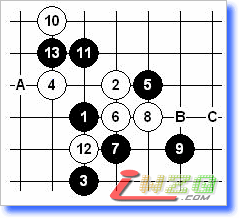
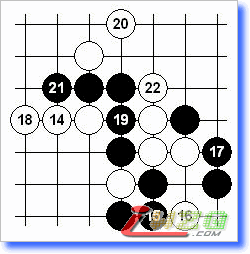
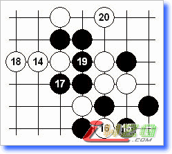
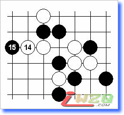
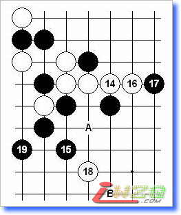
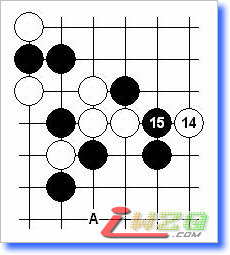

关于“明星”一打的几个问题
#1 关于“明星”一打的几个问题作者：有志青年 发表时间：2008-3-31 17:10:00
前段时间有棋友问我一些问题，由于自己没有验证过结论是否正确，所以不能明确告知。其中，关于明星一打的三问求解还是较容易的，这里略谈几点。

图一：白14有A~C三点强防，黑如何胜的问题。

图二：本图至17是日谱《五珠定石》给出的必胜下法，但忽略了18~22的唯一防。关于此型的bug，早在96年上海就有棋手发现了这个问题，后来俄谱《单击石》中提到了正确的黑15，加之此变化实战几乎无人问津，也就逐渐淡却了。

图三：本图15对很多人来说是第一感的好形，白16~20应该是最强防了。此后是否有定论，当时未深入研究过。

图四：黑15正着黑必胜（俄谱《单击石》）。此后变化繁杂，经过验证确认无误。

图五：黑15必胜要点，16、18最强防，19是妙手（19也有另外一种胜法）。如：16-A，17-18，18-B，19-19！

图六：白14黑有两种胜法，本图的15和15-A皆可。
#2 Re:关于“明星”一打的几个问题作者：walker 发表时间：2008-4-2 0:47:11
有志啊，能否把此帖的棋图修复一下？说不定还有人对这个感兴趣呢。#3 Re:关于“明星”一打的几个问题作者：有志青年 发表时间：2008-4-2 7:04:17
修复？看不到了？#4 Re:Re:关于“明星”一打的几个问题作者：walker 发表时间：2008-4-2 18:14:23
是这样的，帖子中的棋图看不到了。
很多的老帖子都有这个问题，不能不说是件遗憾的事。
［ 有志青年 于 2008-4-2 19:13:34 时奖励此帖[金币加 20 威望加1］
#5 Re:关于“明星”一打的几个问题作者：有志青年 发表时间：2008-4-2 19:12:51
其实图都在，只是地址需要修改，还望能指出具体哪个帖子，请告知，我立马就修改，在此先行谢过。
可以点击帖子上方的 图标，告知“有志青年”我就知道哪个帖子了。
图标，告知“有志青年”我就知道哪个帖子了。
#6 Re:关于“明星”一打的几个问题作者：walker 发表时间：2008-4-3 0:07:33
谢谢楼上。~不用客气哈。
下次偶看到棋图有问题的帖子时注意一下。偶想，很多人是怕麻烦吧、就懒得说了。